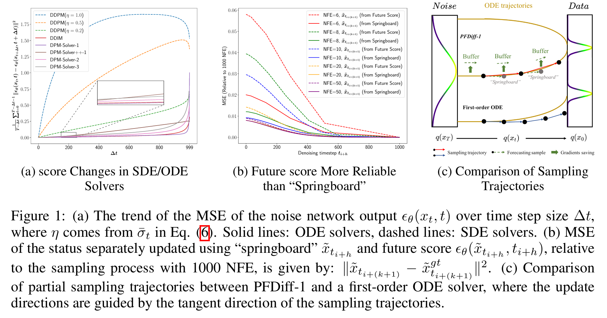
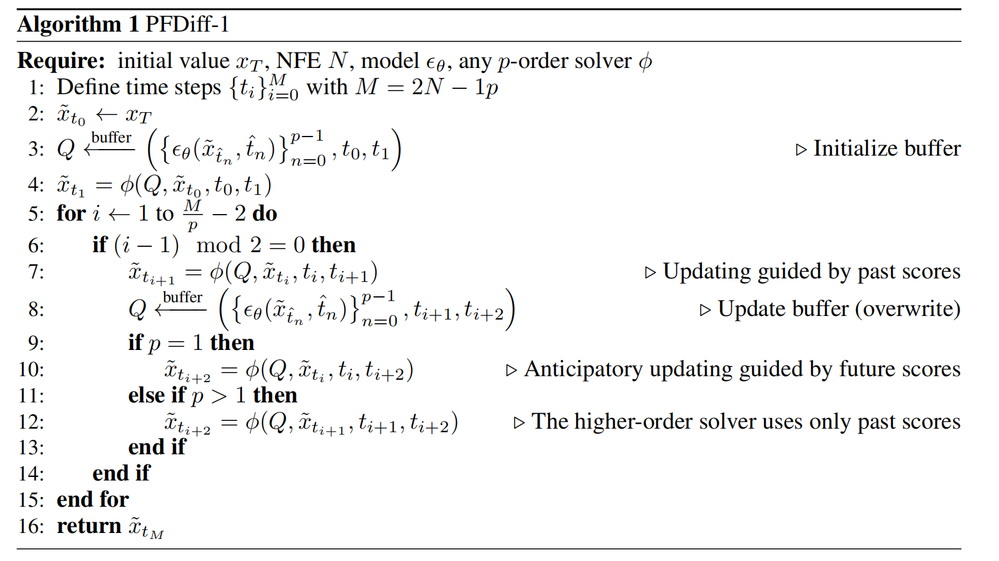
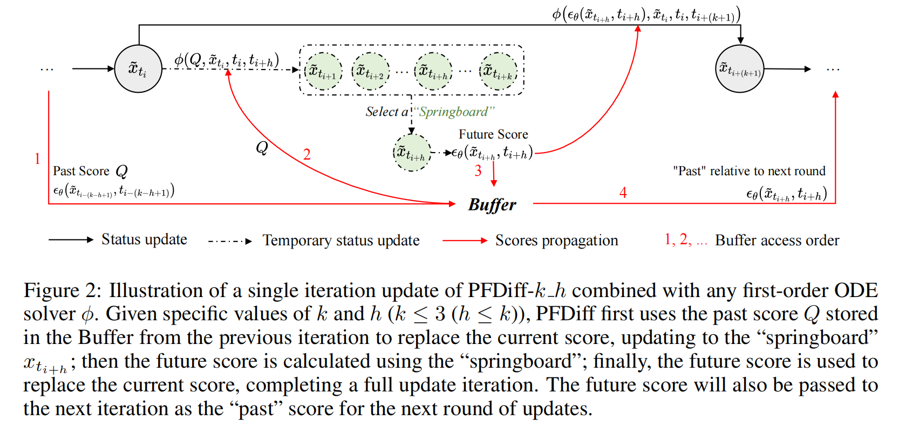
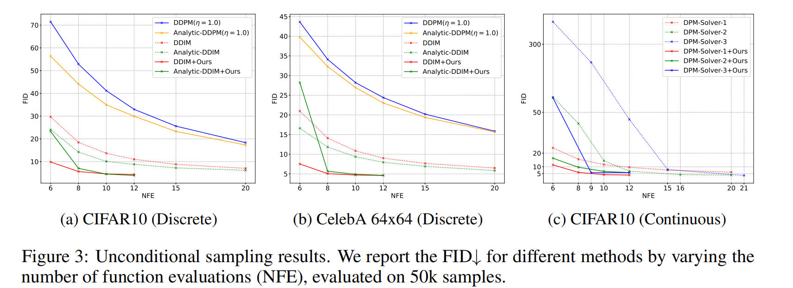
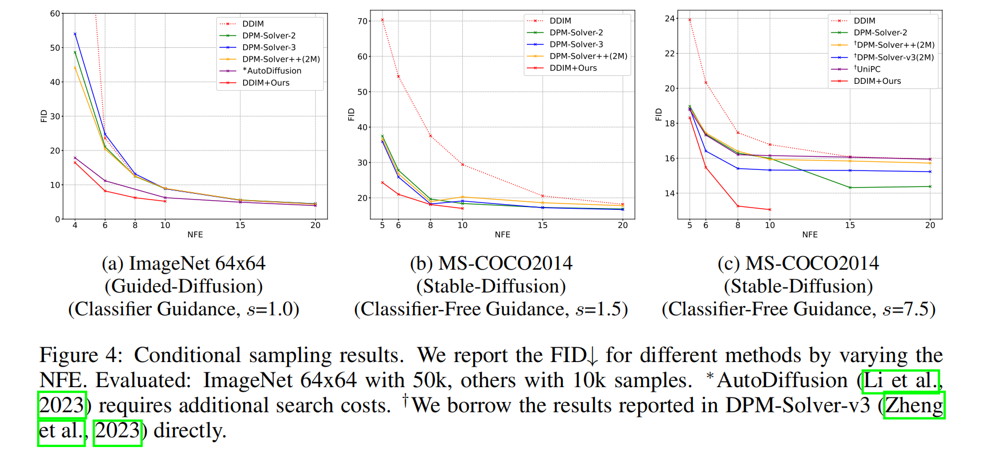
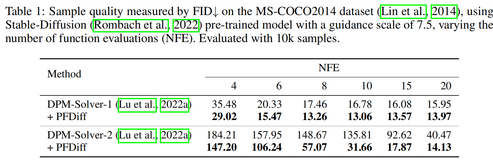

全文翻译
摘要
扩散概率模型（Diffusion Probabilistic Models, DPMs）在图像生成领域展现出巨大潜力，但其采样效率受限于大量的去噪步骤。现有的解决方案大多通过提出快速常微分方程（ODE）求解器来加速采样过程。然而，当函数评估次数（NFE）较少时，ODE 求解器不可避免的离散化误差会被显著放大。在本研究中，我们提出了 PFDiff，这是一种全新的无需训练的正交跳步策略，它能使现有的快速 ODE 求解器在较少的 NFE 下运行。具体而言，PFDiff 首先利用过去时间步的分数替换来预测一个 “跳板” 状态。随后，它结合受 Nesterov 动量启发的前瞻更新机制，利用这个 “跳板” 状态快速更新当前的中间状态。这种方法在减少不必要的 NFE 的同时，还能校正一阶 ODE 求解器固有的离散化误差。实验结果表明，PFDiff 在各种预训练的 DPM 模型上都具有灵活的适用性，在条件 DPM 模型中表现尤为出色，超越了以往最先进的无需训练的方法。例如，以 DDIM 为基线，在 ImageNet 64x64 数据集上使用分类器引导时，我们的方法达到了 16.46 的 FID（4 次 NFE），而 DDIM 的 FID 为 138.81；在引导尺度为 7.5 的 Stable Diffusion 模型上，我们的方法以 10 次 NFE 达到了 13.06 的 FID。代码可在https://github.com/onefly123/PFDiff获取。
1引言
近年来，扩散概率模型（DPMs）（Sohl-Dickstein等人，2015；Ho等人，2020；Song等人，2020b）在包括图像生成（Dhariwal和Nichol，2021；Peebles和Xie，2023；Karras等人，2024）、视频生成（Dehghani等人，2023）、文本到图像生成（Rombach等人，2022；Betker等人，2023）、语音合成（Song等人，2022）以及文本到3D生成（Poole等人，2022；Lin等人，2023）在内的多个领域展现出卓越的建模能力。它们已成为推动深度生成模型发展的关键驱动力。DPMs通过正向过程向图像中引入噪声，然后利用神经网络学习反向过程，逐步去除噪声，从而生成图像（Ho等人，2020；Song等人，2020b）。与生成对抗网络（GANs）（Goodfellow等人，2014）和变分自编码器（VAEs）（Kingma和Welling，2013）等其他生成方法相比，DPMs不仅优化目标更简单，还能够生成更高质量的样本（Dhariwal和Nichol，2021）。然而，通过DPMs生成高质量样本需要数百甚至数千个去噪步骤，这大大降低了它们的采样效率，成为其广泛应用的主要障碍。
目前，DPMs中快速采样的现有技术主要分为两类。第一类是基于训练的方法（Salimans和Ho，2022；Liu等人，2022b；Song等人，2023；Yin等人，2024），这类方法可以显著压缩采样步骤，甚至实现单步采样。然而，这种压缩通常伴随着相当大的额外训练成本，并且这些方法难以应用于大型预训练模型。第二类是无需训练的采样器（Song等人，2020a；Lu等人，2022a、b；Bao等人，2022b、a；Liu等人，2022a；Li等人，2023；Zheng等人，2023；Ma等人，2024；Wimbauer等人，2024；Zhao等人，2023；Xue等人，2023），它们通常采用随机微分方程（SDE）/常微分方程（ODE）的隐式或解析解来实现低误差的采样过程。例如，Lu等人（Lu等人，2022a、b）通过分析DPMs的ODE求解器的半线性结构，试图解析地推导出DPMs的ODE求解器的最优解。这些无需训练的采样策略通常可以即插即用，与现有的预训练DPMs兼容。然而，当NFE低于10时，这些无需训练的方法的离散化误差会显著放大，导致收敛问题（Lu等人，2022a、b），并且仍然可能很耗时。
为了进一步提高DPMs的采样速度，我们分析了现有无需训练的加速方法的改进潜力。最初，我们观察到当时间步长Δt不是极大时，现有ODE求解器的模型输出具有很高的相似性，如图1a所示。这一观察结果促使我们利用过去时间步计算出的分数来近似当前分数，从而预测一个 “跳板” 状态。此外，正如备注1中所指出的，由于DPMs的采样过程与随机梯度下降（SGD）（Robbins和Monro，1951）之间存在相似性，我们引入了受Nesterov动量（Nesterov，1983）启发的前瞻更新机制，该机制以加速SGD训练而闻名。具体来说，我们首先使用 “跳板” 状态预测未来分数以减少误差，如图1b所示。然后，我们进一步用未来分数替换当前分数，以便采用更大的更新步长Δt，如图1c所示。
受这些见解的启发，我们提出了PFDiff，这是一种跳步采样算法，它结合过去和未来的分数快速更新当前的中间状态。值得注意的是，PFDiff无需训练，并且与现有的DPMs采样算法正交，为DPMs采样提供了一个新的正交维度。此外，我们证明了PFDiff尽管使用较少的NFE，但能够校正一阶ODE求解器采样轨迹中的误差，如图1c所示。这确保了在提高采样速度的同时不会牺牲采样质量；它只是减少了现有ODE求解器中不必要的NFE。为了验证PFDiff的正交性和有效性，我们在无条件（Ho等人，2020；Song等人，2020b、a）和有条件（Dhariwal和Nichol，2021；Rombach等人，2022）预训练的DPMs上进行了广泛的实验。可视化实验结果见附录D.9。结果表明，PFDiff显著提高了现有ODE求解器的采样性能。特别是在条件DPMs中，仅以DDIM为基线的PFDiff就超越了以往最先进的无需训练的采样算法。
|  |
|---|
| 图1：(a) 噪声网络输出$\epsilon_{\theta}(x_{t}, t)$的均方误差（MSE）随时间步长$\Delta t$的变化趋势，其中$\eta$来自公式(6)中的$\bar{\sigma}_{t}$。实线：ODE求解器，虚线：SDE求解器。(b) 分别使用 “跳板” $\tilde{x}_{t_{i+h}}$和未来分数$\epsilon_{\theta}(\tilde{x}_{t_{i+h}}, t_{i+h})$更新状态的均方误差，相对于1000次函数评估（NFE）的采样过程，计算公式为：$\parallel\tilde{x}_{t_{i+(k+1)}}-\tilde{x}_{t_{i+(k+1)}}^{gt}\parallel^{2}$。(c) PFDiff-1与一阶ODE求解器的部分采样轨迹对比，其中更新方向由采样轨迹的切线方向引导 |
2背景
2.1 扩散随机微分方程
扩散概率模型（DPMs）（Sohl-Dickstein等人，2015；Ho等人，2020；Song等人，2020b）旨在生成服从数据分布$q(x_{0})$的$D$维随机变量$x_{0} \in \mathbb{R}^{D}$。以去噪扩散概率模型（DDPM）（Ho等人，2020）为例，这些模型通过在离散时间步上定义的正向过程向数据分布引入噪声，逐渐将其转化为标准高斯分布$x_{T} \sim N(0, I)$。正向过程的潜在变量$\{x_{t}\}_{t \in[0, T]}$定义如下：
其中$\alpha_{t}$是与时间步$t$相关的标量函数，且$\alpha_{t}^{2}+\sigma_{t}^{2}=1$。在模型的反向过程中，DDPM利用神经网络模型$p_{\theta}(x_{t - 1}|x_{t})$来近似转移概率$q(x_{t - 1}|x_{t}, x_{0})$：
通过从标准高斯分布采样并利用训练好的神经网络，可以生成服从数据分布$p_{\theta}(x_{0})=\prod_{t = 1}^{T}p_{\theta}(x_{t - 1}|x_{t})$的样本。
此外，Song等人（2020b）引入随机微分方程（SDE）来对连续时间步的DPMs进行建模，其正向过程定义为：
其中$w_{t}$表示标准维纳过程，$f$和$g$是时间步$t$的标量函数。值得注意的是，公式（1）中的正向过程是公式（3）的离散形式，其中$f(t)=\frac{d\log\alpha_{t}}{dt}$，$g^{2}(t)=\frac{d\sigma_{t}^{2}}{dt}-2\frac{d\log\alpha_{t}}{dt}\sigma_{t}^{2}$ 。Song等人（2020b）进一步证明，公式（3）中的正向过程存在一个从时间步$T$到$0$的等效反向过程：
其中$\overline{w}$表示标准维纳过程。在这个反向过程中，唯一未知的是得分函数$\nabla_{x}\log q_{t}(x_{t})$，它可以通过神经网络进行近似。
2.2 扩散常微分方程
在基于SDE的DPMs中，采样过程的离散化通常需要大量时间步才能收敛，例如DDPM（Ho等人，2020）中使用的$T = 1000$个时间步。这主要是因为SDE在每个时间步引入了随机性。为了实现更高效的采样过程，Song等人（2020b）利用福克 - 普朗克方程（Oksendal和Oksendal，2003）推导出与SDE相关的概率流常微分方程（ODE），该ODE在任何给定时间$t$与SDE具有相同的边际分布。具体来说，从公式（3）推导得到的反向过程ODE可以表示为：
与SDE不同，ODE避免了随机性的引入，从而可以在更少的时间步内收敛到数据分布。Song等人（2020b）采用高阶RK45 ODE求解器（Dormand和Prince，1980），仅用60次函数评估（NFE）就实现了与1000次NFE的SDE相当的样本质量。此外，像DDIM（Song等人，2020a）和DPM-Solver（Lu等人，2022a）等研究探索了能够在更少NFE下收敛的离散ODE形式。对于DDIM，它在DDPM的基础上打破了马尔可夫链约束，推导出新的采样公式：
其中$\overline{\sigma}_{t}=\eta\sqrt{\frac{1 - \alpha_{t - 1}}{1 - \alpha_{t}}}\sqrt{1 - \frac{\alpha_{t}}{\alpha_{t - 1}}}$，$\alpha_{t}$对应公式（1）中的$\alpha_{t}^{2}$。当$\eta = 1$时，公式（6）变为DDPM的形式；当$\eta = 0$时，它退化为ODE，即DDIM采用的形式，能够在更少的时间步内获得高质量样本。
备注1：在本文中，我们认为得分$d\overline{x}_{t}$、噪声网络输出$\epsilon_{\theta}(x_{t}, t)$和得分函数$\nabla_{x}\log q_{t}(x_{t})$表达的是等效概念。这是因为Song等人（2020b）证明了$\epsilon_{\theta}(x_{t}, t)=-\sigma_{t}\nabla_{x}\log q_{t}(x_{t})$。此外，我们发现DPMs的任何一阶求解器都可以参数化为$x_{t - 1}=\overline{x}_{t}-\gamma_{t}d\overline{x}_{t}+\xi\epsilon_{t}$。以DDIM（Song等人，2020a）为例，其中$\overline{x}_{t}=\sqrt{\frac{\alpha_{t - 1}}{\alpha_{t}}}x_{t}$，$\gamma_{t}=\sqrt{\frac{\alpha_{t - 1}}{\alpha_{t}}-\alpha_{t - 1}}-\sqrt{1 - \alpha_{t - 1}}$，$d\overline{x}_{t}=\epsilon_{\theta}(x_{t}, t)$，$\xi = 0$。这表明了SGD与DPMs采样过程之间的相似性，Xue等人（2023）和Wang等人（2024）的研究也隐含地暗示了这一发现。
3方法
3.1 求解反向过程扩散常微分方程
通过代入$\epsilon_{\theta}(x_{t}, t)=-\sigma_{t} \nabla_{x} log q_{t}(x_{t})$（Song等人，2020b），公式（5）可以重写为：
给定初始值$x_{T}$，我们定义时间步$\{t_{i}\}_{i = 0}^{T}$，从$t_{0}=T$逐渐减小到$t_{T}=0$。令$\tilde{x}_{t_{0}} = x_{T}$作为初始值。通过$T$步迭代，我们计算序列$\{\tilde{x}_{t_{i}}\}_{i = 0}^{T}$以获得此常微分方程的解。对公式（7）两边进行积分，我们可以得到这个采样常微分方程的精确解：
对于任何$p$阶常微分方程求解器，公式（8）可以离散表示为：
这里，$Q=(\{\epsilon_{\theta}(\tilde{x}_{\tilde{t}_{n}}, \hat{t}_{n})\}_{n = 0}^{p - 1}, t_{i - 1}, t_{i})$存储在时间间隔$t_{i - 1}$和$t_{i}$上计算的$p$个分数的集合，其中$\hat{t}_{0}=t_{i - 1}$，$\hat{t}_{p}=t_{i}$，$\Delta \hat{t}=\hat{t}_{n + 1}-\hat{t}_{n}$表示时间步长。特别地，当$p = 1$时，$Q=\epsilon_{\theta}(\tilde{x}_{t_{i - 1}}, t_{i - 1})$。函数$\phi$是任何$p$阶常微分方程求解器，它使用存储在$Q$中的分数，将当前状态$\overline{x}_{t_{i - 1}}$从时间点$t_{i - 1}$更新到$t_{i}$。函数$h$表示不同的$p$阶常微分方程求解器处理函数$s$的方式，其具体形式取决于求解器的设计。例如，在DPM-Solver（Lu等人，2022a）中，使用指数积分器将$s$转换为$h$以消除线性项。在一阶欧拉 - 丸山求解器（Kloeden等人，1992）的情况下，它是$s$的恒等映射。
当使用公式（9）中定义的常微分方程求解器进行采样时，选择$T = 1000$会导致DPMs的效率显著降低。对DDIM（Song等人，2020a）的研究首次揭示，通过从时间步$[0, …, T]$的子序列构建长度为$M + 1(M ≤T)$的新的前向子状态序列$\{\tilde{x}_{t_{i}}\}_{i = 0}^{M}$，并反转这个子状态序列，有可能在更少的时间步内收敛到数据分布。然而，如图1a所示，对于常微分方程求解器，随着时间步长$\Delta t=t_{i}-t_{i - 1}$的增加，分数方向最初变化缓慢，但当$\Delta t \to T$时会发生突变。这种现象表明，在最小函数评估次数（即最大时间步长$\Delta t$）的条件下，公式（9）中的离散化误差会显著放大。因此，现有的常微分方程求解器在最小函数评估次数下进行采样时，必须牺牲采样质量来换取速度，将函数评估次数减少到10以下是一项极具挑战性的任务（Lu等人，2022a；2022b）。鉴于此，我们旨在开发一种高效的跳步采样算法，在减少函数评估次数的同时纠正离散化误差，从而确保采样质量不受影响，甚至可能得到提高。
3.2 基于过去分数的采样引导
如图1a所示，当时间步长$\Delta t$（即$t_{i}-t_{i - 1}$）不过大时，噪声网络的均方误差（定义为$\frac{1}{T-\Delta t} \sum_{t=0}^{T-\Delta t-1}\left|\epsilon_{\theta}(x_{t}, t)-\epsilon_{\theta}(x_{t+\Delta t}, t+\Delta t)\right|^{2}$）非常相似。这种现象在基于常微分方程的采样算法中尤为明显，如DDIM（Song等人，2020a）和DPM-Solver（Lu等人，2022a）。这一观察结果表明，在完整的采样过程中（例如，当$T = 1000$时），基于常微分方程的采样方法存在许多不必要的时间步，这也是这些方法能够在更少步骤内生成样本的原因之一。基于此，我们提议用前一个时间步的输出替换当前时间步的噪声网络，以减少不必要的函数评估次数，同时不影响最终生成样本的质量。具体来说，对于任何$p$阶常微分方程求解器$\phi$，从$\tilde{x}_{t_{i - 1}}$到$\tilde{x}_{t_{i}}$的采样过程可以根据公式（9）重新表述如下：
然后，我们将噪声网络输出存储在缓冲区中，以供下一个时间步使用，如下所示：
其中$t_{i - 1}$和$t_{i}$表示计算$p$个分数集合的时间间隔。对于从$\tilde{x}_{t_{i}}$到$\tilde{x}_{t_{i + 1}}$的采样过程，我们直接使用上一个时间步保存在缓冲区中的噪声网络输出替换当前时间步的噪声网络，从而将中间状态更新到下一个时间步（即“跳板”$\tilde{x}_{t_{i + 1}}$），具体如下：
通过这种方法，我们可以减少不必要的函数评估次数，从而加速采样过程。
注2：值得注意的是，当时间步长$\Delta t$非常大（函数评估次数$<10$）时，过去和当前分数之间的相似度会急剧下降，使得公式（12）中的“跳板”$\tilde{x}_{t_{i + 1}}$不可靠。因此，在3.3节中，我们仅使用$\tilde{x}_{t_{i + 1}}$来预测前瞻性更新方向（即未来分数），以减少替换带来的误差，如图1b和图1c所示。通过第4.3节中的消融实验表明，过去分数和未来分数是互补且不可或缺的。
3.3 基于未来分数的采样引导
如注1所述，考虑到DPMs的采样过程与随机梯度下降（SGD）（Robbins和Monro，1951）之间的相似性，并受Nesterov动量（Nesterov，1983）的启发，我们引入了一个前瞻性更新方向（即未来分数），以帮助当前中间状态实现更高效的跨越式更新。值得注意的是，使用未来分数比直接使用“跳板”更可靠，如注2所述。具体来说，在从$\tilde{x}_{t_{i}}$到$\tilde{x}_{t_{i + 2}}$的采样过程中，我们考虑使用未来分数（对应时间点$t_{i + 1}$）替换当前分数（对应$t_{i}$）。从公式（12）继续，我们使用“跳板”$\tilde{x}_{t_{i + 1}}$估计未来分数，并更新缓冲区如下：
随后，利用前瞻性更新的概念，我们使用当前中间状态$\tilde{x}_{t_{i}}$以及对应时间点$t_{i + 1}$的未来分数来预测进一步的未来中间状态$\tilde{x}_{t_{i + 2}}$，如下所示：
此外，我们分析了如何使用未来分数来纠正一阶常微分方程求解器在离散公式（8）中的误差。设$s_{\theta}(x_{t}, t):=s(\epsilon_{\theta}(x_{t}, t), x_{t}, t)$，我们进一步分析公式（8）中可能导致误差的项$\int_{t_{i - 1}}^{t_{i}} s_{\theta}(x_{t}, t) d t$。假设$s_{\theta}^{(n)}(x_{r}, r)$，$r \in[t_{i - 1}, t_{i}]$存在且连续，在$t = r$处应用泰勒展开，我们得到：
命题3.1：对于任何给定的DPM一阶常微分方程求解器，与使用当前时间点$r = t_{i - 1}$的分数相比，使用未来时间点$r=\varepsilon$的分数时，公式（15）中高阶导数项的系数的绝对值更小，如下所示（证明见附录B.2）：
命题3.1表明，在使用未来分数进行采样时，忽略高阶导数项的影响较小，从而纠正了一阶常微分方程求解器固有的离散化误差。然而，高阶常微分方程求解器通过多次估计噪声网络的输出（Lu等人，2022a；2022b；Zheng等人，2023）来逼近高阶导数项。未来分数和高阶常微分方程求解器以两种并行的方式减少了因忽略高阶导数项而导致的离散化误差，这使得同时使用这两种方法时的误差分析变得复杂。因此，当使用高阶常微分方程求解器作为基线时，仅通过使用过去分数来加速采样过程。只需要将公式（14）修改为$\tilde{x}_{t_{i + 2}} \approx \phi(Q, \tilde{x}_{t_{i + 1}}, t_{i + 1}, t_{i + 2})$，同时保持$Q$不变。
3.4 PFDiff：基于过去和未来分数的采样引导
结合3.2节和3.3节，通过公式（12）获得的“跳板”$\overline{x}_{t_{i + 1}}$用于更新公式（13）中的缓冲区$Q$。通过这种方式，我们实现了我们提出的高效跳步算法，我们将其命名为PFDiff。值得注意的是，在从中间状态$\overline{x}_{t_{i}}$到$\overline{x}_{t_{i + 2}}$的迭代过程中，我们在公式（13）中仅对噪声网络进行一次批量计算（函数评估次数$=p$）。此外，我们提出在单次迭代过程中，公式（14）中的$\tilde{x}_{t_{i + 2}}$可以修改为$\overline{x}_{t_{i + (k + 1)}}$，实现$k$步跳，以采样更遥远的未来中间状态。当$k≠1$时，公式（13）中的缓冲区$Q$有多种计算来源。这可以通过将公式（12）中的“跳板”$\tilde{x}_{t_{i + 1}}$修改为$\tilde{x}_{t_{i + h}}$来实现，其中$h(h ≤k)$表示不同的跳板选择。我们将这种多步跳和不同“跳板”选择策略统称为PFDiff-k h $(h ≤k)$。算法过程如图2和算法1所示，附录C提供了更多详细信息。此外，通过比较PFDiff-1和一阶常微分方程采样器的采样轨迹，如图1c所示，PFDiff-1展示了其在减少函数评估次数的同时纠正一阶常微分方程采样器采样轨迹的能力。同时，我们观察到PFDiff通过一次分数计算（1次函数评估）完成两次更新，这相当于用2次函数评估实现了二阶常微分方程求解器的更新过程。这种有效性源于PFDiff的信息高效更新过程，它利用了互补且不可或缺的过去和未来分数。PFDiff采样结果收敛到与求解器$\phi$一致的数据分布依赖于中值定理，如附录B.3所述。最后，需要强调的是，尽管PFDiff与任意常微分方程求解器正交，但从不同角度看，PFDiff也可以被视为一个独立的常微分方程求解器。
|  |
|---|
| 算法1 |
|  |
|---|
| 图2：PFDiff-k h与任意一阶常微分方程求解器ϕ结合的单次迭代更新示意图。给定特定的k和h值（k ≤ 3且h ≤ k），PFDiff首先使用上一次迭代存储在缓冲区中的过去分数Q替换当前分数，更新到 “跳板”$x_{t_{i+h}}$；然后利用 “跳板” 计算未来分数；最后，用未来分数替换当前分数，完成一次完整的更新迭代。未来分数还将作为下一轮更新的 “过去” 分数传递到下一次迭代中。 |
3.5 基于轨迹形状的有效性分析
在命题3.1中，我们从理论上分析了PFDiff如何纠正一阶常微分方程（ODE）求解器的误差以实现高效采样。在本节中，我们从轨迹的几何形状角度来解释PFDiff的有效性。此前的研究已经对扩散模型的采样轨迹进行了探索（Sabour等人，2024；Zhou等人，2024；Chen等人，2024）。Zhou等人（2024）指出，扩散概率模型（DPMs）的采样轨迹位于嵌入高维空间的低维子空间中，且轨迹形状与直线极为相似。这一发现表明，PFDiff中用过去分数替换当前分数的策略是可靠的。此外，Chen等人（2024）进一步指出，采样轨迹呈“回飞镖”形状，即采样轨迹的曲率开始时较小，随后增大，最后减小。基于这一观察，我们可以分析得出，沿切线方向进行采样的一阶ODE求解器在轨迹曲率较大的区域会产生较大的离散化误差。而PFDiff则利用未来分数来预测未来的更新方向，从而纠正沿切线方向采样所引入的离散化误差。在图1c中，我们清晰展示了PFDiff对一阶ODE求解器的采样校正过程，进而验证了PFDiff的有效性。
4实验
在本节中，我们通过一系列广泛的实验验证了PFDiff作为一种正交且无需训练的采样器的有效性（可视化实验结果见附录D.9中的图7 - 13）。该采样器可与任意阶的ODE求解器集成，从而显著提高各类预训练DPM的采样效率。为系统展示PFDiff的性能，我们将预训练的DPM分为两大类：条件DPM和无条件DPM。无条件DPM进一步细分为离散型和连续型，而条件DPM则细分为分类器引导和无分类器引导。在选择ODE求解器时，我们采用被广泛认可的一阶DDIM（Song等人，2020a）、Analytic-DDIM（Bao等人，2022b）以及高阶DPM-Solver（Lu等人，2022a）作为基线。对于每个实验，我们使用弗雷歇初始距离（FID）（Heusel等人，2017）作为主要评估指标，并在附录D.7中提供初始得分（IS）（Salimans等人，2016）的实验结果以供参考。除了在4.3节中讨论的对参数k和h的消融研究外，我们展示了PFDiff $k h$（其中$k = 1,2,3$且$h ≤ k$）在六种配置下的最优结果，以此展示PFDiff的性能。如附录C所述，这在实际应用中不会增加计算负担。所有实验均在NVIDIA RTX 3090 GPU上进行。
4.1无条件采样
对于无条件DPM，我们选择离散的DDPM（Ho等人，2020）和DDIM（Song等人，2020a），以及来自连续ScoreSDE（Song等人，2020b）的预训练模型，来评估PFDiff的有效性。对于这些预训练模型，所有实验均采样50k个样本以计算评估指标。
对于无条件离散DPM，我们首先选择一阶ODE求解器DDIM（Song等人，2020a）和Analytic-DDIM（Bao等人，2022b）作为基线，同时实施基于SDE的DDPM（Ho等人，2020）和Analytic-DDPM（Bao等人，2022b）方法进行比较，其中$\eta = 1.0$来自公式（6）中的$\bar{\sigma}_{t}$。我们使用DDIM采用的二次时间步长，在CIFAR10（Krizhevsky等人，2009）和CelebA 64x64（Liu等人，2015）数据集上进行实验。通过将函数评估次数（NFE）从6变化到20，评估指标FID如图3a和3b所示。此外，我们在CelebA 64x64、LSUN-bedroom 256x256（Yu等人，2015）和LSUN-church 256x256（Yu等人，2015）数据集上使用均匀时间步长进行实验，更多结果见附录D.2。我们的实验结果表明，基于离散无条件DPM的预训练模型，PFDiff在多个数据集上显著提高了DDIM和Analytic-DDIM采样器的采样效率。例如，在CIFAR10数据集上，PFDiff结合DDIM仅用15次NFE就达到了4.10的FID，与DDIM用1000次NFE达到的4.04的FID性能相当。这是其他为了速度而牺牲采样质量的跳步算法（Bao等人，2022b；Ma等人，2024）无法实现的。此外，在附录D.2中，通过将公式（6）中的$\eta$从1.0变化到0.0来控制SDE引入的噪声规模，我们观察到随着$\eta$减小（减少噪声引入），PFDiff的性能逐渐提高。这与图1a中所示的趋势一致，即减少噪声引入会提高模型输出的相似性。
对于无条件连续DPM，我们选择DPM-Solver-1、-2和-3（Lu等人，2022a）作为基线，以验证PFDiff作为一种正交跳步算法在一阶和高阶ODE求解器上的有效性。我们在CIFAR10（Krizhevsky等人，2009）上使用二次时间步长进行实验，改变NFE。使用FID作为评估指标的实验结果如图3c所示。更多实验细节见附录D.3。我们观察到，在较少的NFE设置下，PFDiff始终比基线提高采样性能，特别是在高阶ODE求解器在较小NFE（低于10）下无法收敛的情况下（Lu等人，2022a）。
|  |
|---|
| 图3：无条件采样结果。我们报告了不同方法在改变函数评估次数（NFE）时的FID值，评估基于50,000个样本。 |
4.2条件采样
对于条件DPM，我们选择广泛认可的分类器引导范式的预训练模型ADM-G（Dhariwal和Nichol，2021），以及无分类器引导范式的预训练模型Stable-Diffusion（Rombach等人，2022），来验证PFDiff的有效性。我们在所有数据集上采用均匀时间步长设置，并使用DDIM（Song等人，2020a）ODE求解器作为基线。在ImageNet 64x64（Deng等人，2009）数据集上对ADM-G采样50k个样本，在其他数据集（包括ADM-G中的ImageNet 256x256和Stable-Diffusion中的MS-COCO2014（Lin等人，2014））上采样10k个样本，计算评估指标。
对于采用分类器引导范式的条件DPM，我们在ImageNet 64x64数据集上进行实验，引导尺度（s）设置为1.0。为进行比较，我们实现了DPM-Solver-2和-3（Lu等人，2022a）以及DPM-Solver++(2M)（Lu等人，2022b），这些方法在条件DPM上表现最佳。此外，我们引入了以DDIM为基线的AutoDiffusion方法（Li等人，2023）进行比较，注意该方法会产生额外的搜索成本。我们通过改变NFE比较FID分数，如图4a所示，相应的视觉比较见图7b。我们观察到，PFDiff将DDIM在4次NFE时的FID从138.81降低到16.46，质量提高了88.14%。图7b中的视觉结果进一步表明，在相同的NFE设置下，PFDiff实现了更高质量的采样。此外，我们基于DDIM在大规模ImageNet 256x256数据集上评估PFDiff的采样性能。详细结果见附录D.4。
对于条件、无分类器引导范式的DPM，我们使用sd-v1-4检查点，并在MS-COCO2014（Lin等人，2014）的验证集上计算FID分数。我们在引导尺度（s）设置为7.5和1.5的情况下进行实验。为进行比较，我们实现了DPM-Solver-2和-3（Lu等人，2022a）以及DPM-Solver++(2M)（Lu等人，2022b）方法。在$s = 7.5$时，我们引入了DPM-Solver-v3（Zheng等人，2023）中报道的最先进方法，以及DPM-Solver++(2M)（Lu等人，2022b）、UniPC（Zhao等人，2023）和DPM-Solver-v3(2M)进行比较。通过改变NFE的FID指标如图4b和4c所示，额外的视觉结果见图7a。我们观察到，PFDiff仅基于DDIM，在Stable-Diffusion的采样过程中达到了最先进的结果，从而证明了PFDiff的有效性。更多实验细节见附录D.5。此外，为进一步验证PFDiff的正交性，我们在原始（单步）DPM-Solver-1和-2上进行实验，使用Stable-Diffusion预训练模型，比较有无PFDiff时的性能，如表1所示。实验结果表明，PFDiff有效地提高了不同阶DPM-Solver的性能。
|  |
|---|
| 图4：条件采样结果。我们报告了不同方法在改变函数评估次数（NFE）时的FID值。评估情况为：在ImageNet 64x64数据集上采样50,000个样本，在其他数据集上采样10,000个样本。AutoDiffusion（Li等人，2023）需要额外的搜索成本。†我们直接引用了DPM-Solver-v3（Zheng等人，2023）报告的结果。* |
|  |
|---|
| 表1：使用指导尺度为7.5的Stable-Diffusion（Rombach等人，2022）预训练模型，在MS-COCO2014数据集（Lin等人，2014）上通过FID评估样本质量，改变函数评估次数（NFE）。评估使用了10,000个样本。 |
4.3消融研究
我们对附录C中提到的PFDiff的六种不同算法配置（$k = 1,2,3$且$h ≤ k$）进行了消融实验。具体来说，我们在无条件和有条件的预训练DPM（Ho等人，2020；Dhariwal和Nichol，2021）上评估FID分数。详细的实验设置和结果见附录D.6.1。实验结果表明，对于各种预训练DPM，参数k和h的选择并不关键，因为PFDiff中的大多数k和h组合都能比基线提高采样效率。此外，在$k = 2$且$h = 1$固定的情况下，PFDiff-2 1在4 - 20次NFE范围内总能提高基线的采样质量。为了获得更好的采样质量，可以对一小部分示例（如5k）进行采样以计算评估指标，或者直接进行视觉分析，这样可以轻松确定最有效的k和h组合。此外，在附录D.6.1中，我们提出了一种几乎没有额外成本的自动搜索策略，该策略可以基于截断误差更快速地获得更具竞争力的k和h组合。
为了验证PFDiff的有效性，一个关键因素是其信息高效的更新过程，该过程使用互补且不可或缺的过去和未来分数，共同引导一阶ODE求解器。我们以DDIM（Song等人，2020a）为基线，分别去除过去和未来分数。此外，我们引入了文献中（Ma等人，2024）通过缓存部分过去分数来加速采样的方法进行比较。如附录D.6.2所示，实验结果表明，仅使用过去分数（包括缓存）或仅使用未来分数只能略微提高一阶ODE求解器的采样性能，但它们的组合（即完整的PFDiff）显著提高了一阶ODE求解器的性能，特别是在步数极少（$NFE < 10$）的情况下。这种现象尤为明显。这些结果进一步验证了PFDiff算法在$NFE < 10$时的效率，这得益于其信息高效的更新过程，利用过去和未来（相互补充）的分数共同引导当前中间状态。此外，我们在附录D.6.2中提供了推理时间的实验结果，结果显示，缓存部分过去分数的方法（Ma等人，2024）不仅会产生额外的推理成本，而且在步数较少（$NFE < 10$）时加速效果相对较弱。然而，PFDiff和所使用的基线具有一致的推理时间，并且表现出显著的加速效果，进一步验证了其有效性。
5结论
在本文中，基于观察到扩散概率模型（DPMs）的常微分方程（ODE）求解器在时间步长不过大时模型输出具有显著相似性这一事实，并借助前瞻性更新机制，我们提出了PFDiff这一新颖方法。该方法利用过去和未来分数快速更新当前中间状态，有效减少了ODE求解器中不必要的函数评估次数（NFE），并显著纠正了一阶ODE求解器在采样过程中的误差。大量实验证明了PFDiff在无条件和有条件预训练DPMs上的正交性和有效性，尤其是在条件预训练DPMs方面，PFDiff的表现优于先前最先进的无训练采样方法。
伦理声明
DPMs与生成对抗网络（GANs）和变分自编码器（VAEs）一样，可能被用作深度生成模型来生成虚假和恶意内容。本文提出的PFDiff能够加速DPMs的生成过程，这可能会促使此类内容的快速创建，从而对社会造成潜在的负面影响。
可重复性声明
我们的代码基于DDIM（Song等人，2020a）、DPM-Solver（Lu等人，2022a）和Analytic-DPM（Bao等人，2022b）的官方实现。我们使用了DDPM（Ho等人，2020）、DDIM（Song等人，2020a）和ScoreSDE（Song等人，2020b）的无条件检查点，以及AMD-G（Dhariwal和Nichol，2021）和Stable-Diffusion（Rombach等人，2022）的有条件检查点。附录C和附录D中描述了详细的实验设置和算法实现。